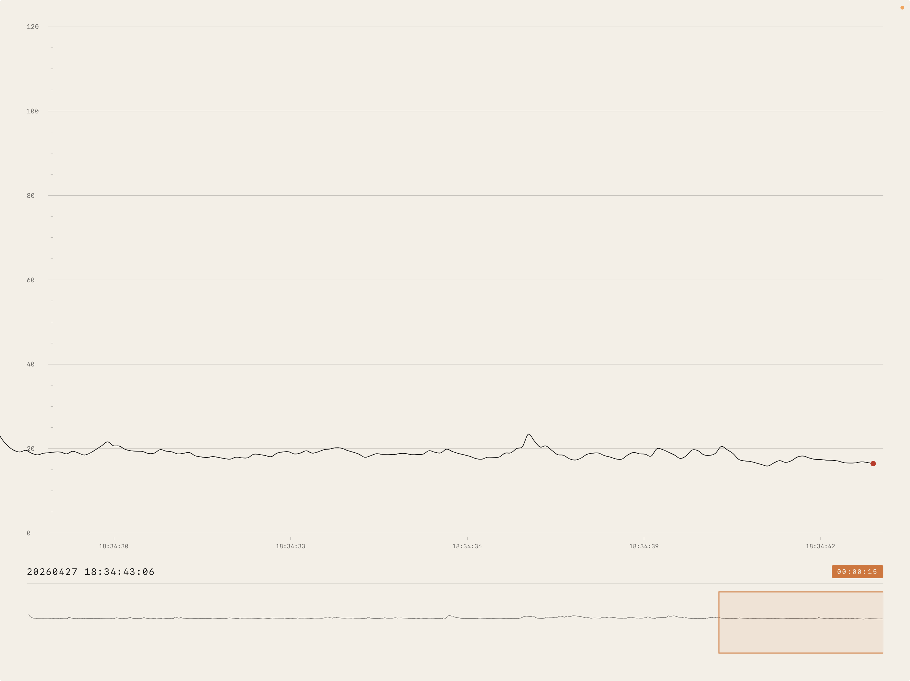

A digital work — listening to rooms
Seismic Shifts
A digital and interactive work that listens to the gallery space — the room it is in and its surrounds — and renders that acoustic energy as a single, slowly scrolling horizontal trace.

The work is for both Deaf and hearing audiences. Its claim is that what is recorded is real — a room has presence, with or without anyone to hear, see, or feel it.
One mic. One line. A glacial scroll. No interaction, no settings, no modes. Cream paper, near-black ink, quiet typography. The trace fills the screen over the course of an afternoon and disappears off the left edge.
What is recorded
Only the visualisation data is held in memory and optionally written to a local file: one number per second representing the room's acoustic shape over time. No audio is captured, stored, or recoverable. The recording cannot be used to reconstruct conversations or identify speakers — it is equivalent to a barometer recording air pressure.
Where it runs
Seismic Shifts is intended to live in a frame on a wall, locked to landscape. It does not connect to the internet. It does not phone home. It listens to the room it is in and its surrounds, draws, and forgets.
The diptych
The digital trace is one half of the work. The other is a hand-drawn ink companion on A0 paper that sets the small reading inside a much longer arc — 65,000 years of Aboriginal sign languages, pockmarked by the seismic moments that have shaped and unmade Deaf life and signed languages. A digital draft of that companion lives here.
Status
In development. Available shortly as a free download.